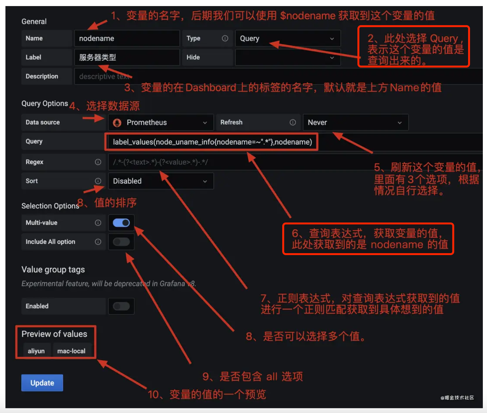
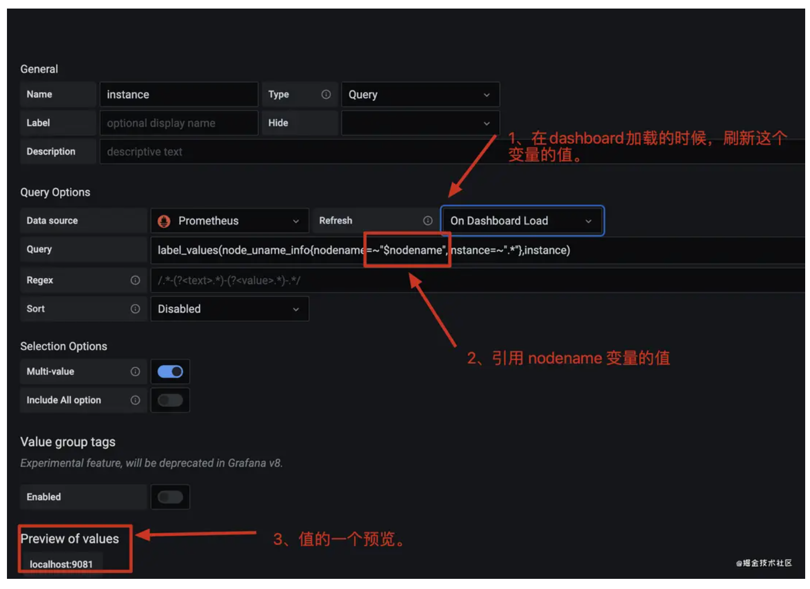
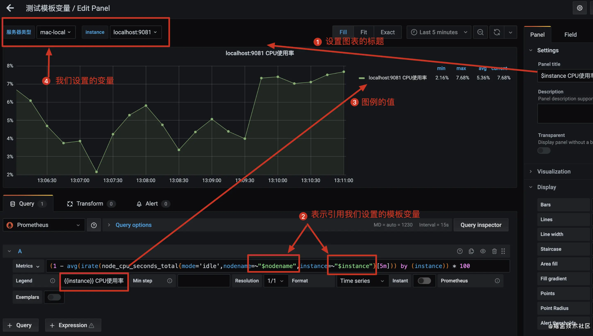
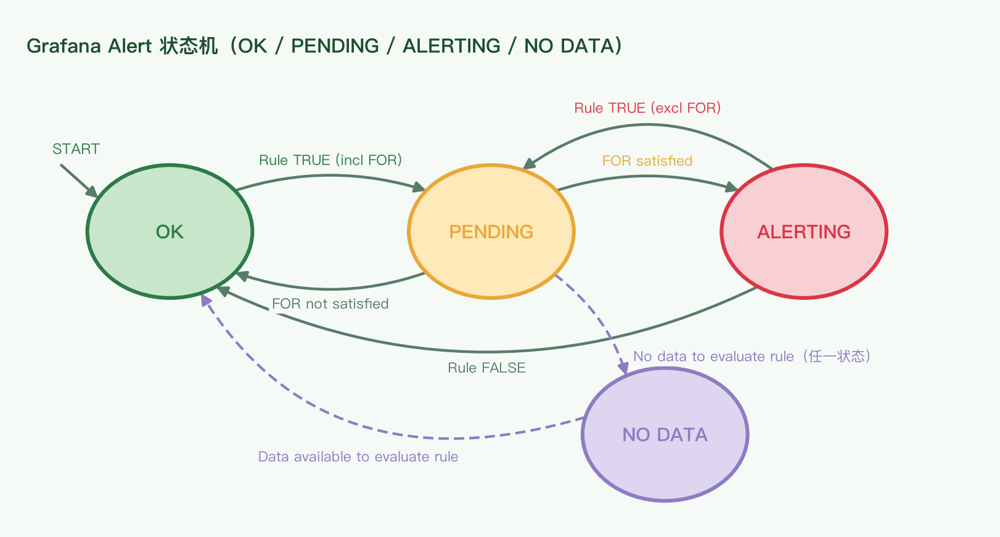
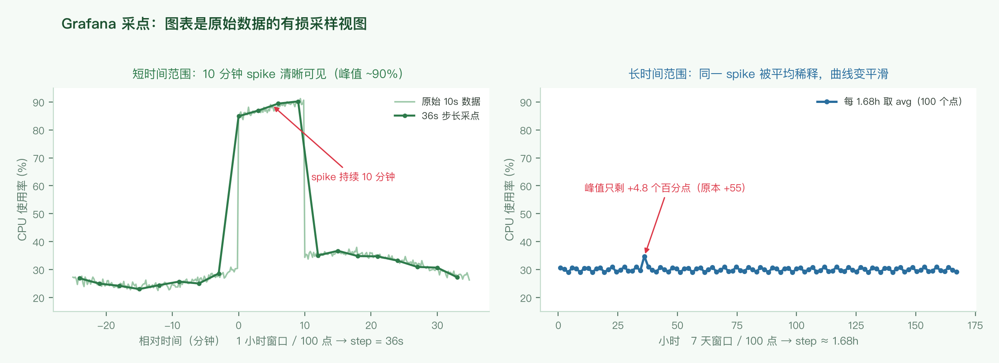

Grafana 是「查询 + 渲染」层：它不存原始数据，只把数据源的查询结果画成图。所以排查图表异常时，先怀疑采点与聚合，再怀疑业务。本文整理模板变量、告警、PromQL/LogQL、图表细节，以及工程上最容易踩的坑（第 6 节：采样会吃峰、缺失会断线、聚合会抹平尖峰）。
用途：一个 dashboard 复用到多组对象上（多机器、多实例、多集群），而不是复制一堆面板。变量来自查询、自定义枚举或时间间隔；后续在查询语句里用 $name 引用。
典型原始指标（node_exporter）：
node_uname_info{nodename="xxxx", instance="yyyy"}label_values(node_uname_info{nodename=~".*"}, nodename)nodename=~".*" 表示"任意 nodename 都算"，此处等价于不过滤）。变量配置项一览（面板顶部下拉框的"后台"）：
| 配置 | 含义 | 实践 |
|---|---|---|
| Name | 变量名，面板里用 $name 引用 | 与标签名保持一致，减少心智负担 |
| Type | Query = 值来自查询；另有 Custom / Interval 等 | 绝大多数用 Query |
| Label | 在 dashboard 顶部显示的名字 | 填中文，如「服务器类型」 |
| Data source | 变量查询走哪个数据源 | 与面板同源，避免跨源不一致 |
| Refresh | Never / On Dashboard Load / On Time Range Change | 级联变量必须用 On Dashboard Load |
| Query | 取值表达式，如 label_values(...) | — |
| Regex | 对取到的值再过滤或捕获，如 /.*-(?<text>.*)-(?<value>.*)-.*/ | 候选值太长时用捕获组裁短 |
| Sort | 候选值排序 | 值多时开启，便于查找 |
| Multi-value | 允许一次选多个值 | 配合 =~ 使用 |
| Include All | 是否提供 All 选项 | 注意 All 展开后查询可能很重 |
| Preview of values | 候选项预览 | 确认查询写对了再看面板 |

让一个变量的候选项依赖另一个变量的当前值：在查询里直接引用上游变量。依赖关系是隐式的——由查询字符串里的 $引用 形成。
label_values(node_uname_info{nodename=~"$nodename", instance=~".*"}, instance)instance 的候选值 = 「属于当前所选 $nodename 的那些序列」的 instance 取值。Refresh = On Dashboard Load：dashboard 加载时就刷新变量值，保证先有 nodename 再有 instance。$var 会展开成多个值，所以匹配一律用正则运算符 =~（= 会匹配失败）。
$nodename，并在 dashboard 加载时刷新(1 - avg(irate(node_cpu_seconds_total{mode='idle', nodename=~"$nodename", instance=~"$instance"}[5m])) by (instance)) * 100node_cpu_seconds_total{mode='idle'}：每个 CPU 核处于 idle 的累计秒数。irate(...[5m])：用最近两个采样点算瞬时速率 → 单位时间的 idle 占比。1 - idle占比：得到"非 idle"占比，即 CPU 使用率。avg(...) by (instance)：按实例把多个核平均掉。* 100：换算成百分比。nodename=~"$nodename" / instance=~"$instance"：把上面的模板变量注入查询，实现面板随下拉框切换。面板上另有两处可以引用变量：
$instance CPU使用率 → 标题随选择变化。{{instance}} CPU使用率 → 图例显示实际的实例名（{{ }} 是取该序列的标签值；$var 更适合标题这类"当前选中值"）。
条件变量随其他变量的取值出现或隐藏，用来减少无关选项（例如集群选 A 时只显示 A 的机房）。配置成本略高，选项爆炸时才值得用。
Value group tags、提示"will be deprecated in Grafana 8"）来自 Grafana 7/8 时代。新版把变量编辑挪到了 Dashboard settings 的侧栏，字段名与层级有变化，但 Name / Type / Query / Regex / Refresh / Multi-value 这套概念没有变。
先由告警规则判定，产生的问题再按标签路由到渠道：
| 组件 | 回答的问题 | 关键点 |
|---|---|---|
| Alert rule | 这条曲线什么算异常？多久算一次？ | Expression 可以串联（Query → Reduce → Math）；Labels 是路由的依据 |
| Notification policy | 异常了要通知谁、什么时候通知 | 树形结构，按 label 匹配；默认策略兜底 |
| Contact point | 通过什么渠道通知 | 一个 contact point 可含多个渠道 |

| 迁移 | 条件 | 含义 |
|---|---|---|
| OK → PENDING | Rule TRUE（incl FOR） | 条件成立，进入等待；此时还不会发通知 |
| PENDING → ALERTING | FOR satisfied | 条件持续满足了 FOR 时长 → 真正告警 |
| PENDING → OK | FOR not satisfied | 等待期内条件不再成立 → 抖动被吃掉 |
| ALERTING → PENDING | Rule TRUE（excl FOR） | 规则仍为真但需要重新计时（配置变更等） |
| ALERTING → OK | Rule FALSE | 恢复 |
| 任意 → NO DATA | No data to evaluate rule | 查询返回空；处理方式可选 OK / Alerting / NoData 单独通知 |
| NO DATA → OK | Data available to evaluate rule | 数据恢复 |
需求：白天和夜间用不同阈值判断 landing 比率异常。Prometheus 的告警表达式里没有"if 时间段"这种语法，做法是构造一条时间开关序列，与业务指标一起进入表达式的 Math 节点。
A = Mimir-PE # 数据源查询：landing 比率
B = hour() >= 0 and hour() < 15 or on() vector(-2)
C = Reduce, Last(A) # 区间内最新值
E = Reduce, Last(B) # 区间内最新的时间标记
D = Math, ($C < 30 && $E < -1) || ($C < 60 && $E > -1) # Alert condition| 表达式 | 作用 |
|---|---|
A | 业务指标本身：来自 PE 的复杂查询，结果是一个比值序列 |
B | 时间标记。0–15 点为真值（+1），其余时段用 on() vector(-2) 兜一个显眼的负值，让后面对"白天/夜间"的判断只靠数值比较 |
C / E | Reduce 的 Last：取区间内最新值，等价于面板右上角的 Last |
D | 真正的告警条件（Alert condition）：(C < 30 && E < -1) || (C < 60 && E > -1) |
E > -1（即 B 为真）→ 白天时段（0–15 点）：比率低于 60 就告警。E < -1（B 被 vector(-2) 替代）→ 夜间时段：比率低于 30 才告警。注意原文的表述是「9–24 小时降低 70% / 0–9 点降低到 30%」，两套写法互为昼夜反转；实际落到表达式上就是 E 的符号分支——可以对照 hour() 的边界自行核对时段划分。
最后是路由：
1m 执行一次表达式，并定义 no data 行为。rule_uid = checkout 的 notification policy，最终走 contact point checkout-victorops-critical。http_request_total{status="200", method="GET"} @14242512313 => 93455
|---- 指标名 ----|--------- 标签 --------| 时间戳 值| 维度 | 写法 | 说明 |
|---|---|---|
| 时间过滤 | x[5m]、x[5m:1m] | 取区间内的点；[5m:1m] 表示 5 分钟窗口、步长 1 分钟 |
| 标签过滤 | = / != / =~ / !~ | 等值或正则；变量注入用 =~ |
| 聚合 | sum / avg / max … by (label) | 默认忽略所有标签聚成一条；by 保留分组维度 |
increase(x[1m]) 是逐条时间序列计算的——只有标签完全相同的点才参与同一次计算。increase(sum(x[1m])) 非法；avg 等聚合同理。sum(increase(http_request_total{path="/test"}[1m]))以 20:00:00 这一个时刻为例，求值顺序：
http_request_total{path="/test"}：筛出 path 为 /test 的数据点。[1m]：取过去 1 分钟的数据点。increase 必须与方括号搭配（时间范围 + 增量函数）。increase()：范围内首末数据点之差，即这 1 分钟的增量。sum()：把所有序列（如多个实例、多个 method）的增量相加。得到的结果只是「20:00:00」这一个点；Grafana 会继续对 20:00:30、20:01:00… 各算一次，把这些点连成曲线。
看似等价，实际不合法：sum 不能作用于时间选择器（[1m]）。正确顺序是「先在每条序列内算时间增量，再做跨序列聚合」，即 sum(increase(...))。其他聚合函数（avg 等）同理。
histogram_quantile(0.95,
sum(rate(nginx_request_seconds_bucket{role=~"$role", instance_id=~"$instanceId"}[$time_range])) by (path, le)
)nginx_request_seconds_bucket 是直方图类型：它不记录每次请求的耗时，而是按耗时上限 le 分桶，记录"耗时 ≤ le 的请求数"（累计计数）。因此分位数要"反推"出来。
| 步骤 | 表达式片段 | 得到什么 |
|---|---|---|
| ① 过滤 | {role=~"$role", instance_id=~"$instanceId"} | 本周关注的序列（变量注入） |
| ② 速率 | rate(...[$time_range]) | 时间范围内每秒落入各桶的请求数 |
| ③ 聚合 | sum(...) by (path, le) | 按路径与桶上限分组求和（le 必须保留，否则无法还原分布） |
| ④ 分位数 | histogram_quantile(0.95, ...) | 用累计桶数据估算 95% 的请求耗时上界（秒） |
sum(increase(http_request_total{path="/test"}[1m])) # 当前
sum(increase(http_request_total{path="/test"}[1m] offset 1m)) # 1 分钟前
sum(increase(http_request_total{path="/test"}[1d] offset 1d)) # 昨天同一时刻比较"今天 vs 昨天""本周 vs 上周同一时点"，都在时间选择器后面加 offset，把窗口整体平移。
改写标签值（例如去掉端口号、把两套命名统一），让不同来源的序列可以一起聚合。属于"用得到再查文档"的函数，记住名字即可。
语法与 PromQL 类似，过滤、聚合的能力也类似；独有的能力是"从日志文本里抽出结构化信息"——这是指标天生不具备的。
sum(count_over_time(
{role="$role", filenam!="access.log", host=~"${host}"} != "INFO"
| json | level="ERROR" | line_format `{{.log}}`[$_range])){...} != "INFO" 先按标签和文本筛掉大部分日志 → | json 把 JSON 日志解析成字段 → | level="ERROR" 按解析出的字段过滤。count_over_time(...[$_range])：统计时间范围内的日志条数，此时还没有聚合，每条流各一个数。sum()：把多条流合并成一条曲线。http_server_requests_seconds_count 这类计数器是应用侧已经聚合好的；日志没有现成的计数器，必须靠 count_over_time 自己数，所以"先 count 再 sum"这两个函数经常一起出现。
{cluster="eu-west-1", level="info"}
|= `completing block`
| json
| pattern `<_> userid=<id> <_>`
| line_format "{{.id}}"| 阶段 | 作用 |
|---|---|
{...} + |= | 标签筛选 + 关键字包含匹配 |
| json | 把 JSON 日志解析为可引用的字段 |
| pattern `<_> userid=<id> <_>` | 非 JSON 的文本用 pattern 抽取：<_> 表示"跳过"，<id> 是要留下的字段 |
| line_format "{{.id}}" | 只输出 id，把原始日志压成可聚合的维度 |
线上调试这类查询可以直接用 play.grafana.org 的 Explore 页面（内置 Loki 数据源）。
序列里出现一个极值时，坐标轴步长被极值拉大，正常波动被压成一条平线，看起来“什么都没发生”。Y 轴是 Grafana 自适应计算的，无法手动指定；能做的只有把异常序列过滤掉，或者用对数轴/单独面板隔离。
显示在面板右上角，是“当前时间范围内”的三个统计量：
| 统计量 | 含义 | 适用 |
|---|---|---|
| Last | 范围内最新一个点的值 | 看“现在怎么样”（Gauge、当前水位） |
| Max | 范围内的最大值 | 看“最坏情况”（延迟尖峰、队列积压峰值） |
| Mean | 范围内的平均值 | 看“整体水平”（容量规划、趋势） |
注意它们与告警表达式里的 Reduce（Last/Max/Mean）是同一套语义——面板上看到的 Last，就是 Reduce(Last) 取到的值。
按某个模板变量的取值批量复制 panel / row：变量有 8 个实例，就自动生成 8 份图，不用手工复制粘贴。多实例、多集群看板的标配。

切换时间范围时，只有两个参数在变：
| 参数 | 含义 | 影响 |
|---|---|---|
| 查询时间跨度 | 你在时间选择器里选的 range | 跨度越大，分给每个点的时间越多 |
| 图表像素宽度 | 面板实际能画多少像素 | 宽度有限 → 点数必须有上限（max data points） |
Grafana 本身不存原始数据，它只用这两个参数算出步长，再向后端要数据：
$$ \text{step} = \frac{\text{查询时间跨度}}{\text{max data points}} $$步长一变，同一个 spike 就能在图上凭空消失。原因有四层，各自独立、可以叠加：
| 层 | 机制 | 图上表现 |
|---|---|---|
| ① 查询窗口本身就是滤波器 | rate(x[5m]) 的每个点 = 窗口内的平均速率。持续 10s 的 spike 落进 5m 窗口，只剩 1/30 |
曲线变平滑，“看起来变慢了” |
| ② 步长 > 抓取间隔 → 漏点（aliasing） | step 决定“只看哪些时刻”。instant selector 取该时刻之前最近的一个样本（lookback delta 默认 5m）。step = 1.68h 而 spike 只有 10s 时，步点落进那个 5m 窗口的概率 ≈ 5% | spike 直接不见——注意这不是被平均，是根本没采到 |
| ③ 窗口首尾相接吞掉增量 | 相邻窗口不重叠时，最后一个样本到下一个窗口第一个样本之间的增量不属于任何窗口。官方例子里 2 小时一跳的 counter，所有峰凭空消失 | 慢速计数器“就是没有峰” |
| ④ 存储层降采样不可逆 | Thanos / Cortex / Mimir 等把长周期数据块预聚合（用 avg 还是 max 由降采样配置决定，与你的查询无关），读大范围时自动选低分辨率块 | 查询层怎么改都还原不出来 |
算一遍（max data points = 100）：
| 场景 | 计算 | 步长 | 结果 |
|---|---|---|---|
| 过去 1 小时 | \( 3600 / 100 \) | 36 s | 10 s 的 spike 有 1~2 个采样点命中 → 看得见 |
| 同一指标拉到 7 天 | \( \frac{7 \times 24 \times 3600}{100} = 6048\ \text{s} \) | ≈ 1.68 h | 每 1.68 小时才出一个代表点，spike 被均值稀释 → 看不见 |
| 层 | 做法 | 为什么有效 |
|---|---|---|
| 检测层（最关键） | 用告警规则与 recording rules 兜底，不靠看板 | 告警规则按自己的 evaluation interval 评估原始数据，不受看板 step 影响。“看板用来看，告警用来兜底。”图上看不见不能当作没发生 |
| 查询层 | 用 $__rate_interval 代替硬编码窗口；峰类指标用 max_over_time(x[1h]) |
前者保证窗口覆盖足够样本且相邻重叠，后者把 1 小时内的峰值带进大窗口 |
| 看板层 | 显式设置 Min step / max data points，用 Query inspector 核对实际 step；峰单独一个面板，或在同一张图上叠一条 max() |
先知道“图到底采了多少点”，再判断异常是否存在 |
| 存储层 | 用 recording rules 预先产出峰值指标（max_over_time、定长 increase） |
把“聚合方式”从查询期搬到写入期，不再依赖当时的时间范围 |
$__rate_interval = max($__interval + 抓取间隔, 4 × 抓取间隔)；抓取间隔取数据源设置里的 Scrape interval（Min step 显式设过时会覆盖它）rate() 才算得稳。窗口小于 4 倍抓取间隔时，常常只覆盖 1 个样本 → 直接 No dataprometheus_tsdb_head_truncations_total 每 2 小时跳一次，用 $__interval 画 rate 时所有峰都消失，换 $__rate_interval 后峰回来了rate(x[5m]) 只在“抓取间隔固定且远小于 5m”时安全；当抓取间隔调到 30s 甚至 1m，同一个面板就会出问题Grafana 既不是“把缺失当 0”，也不是“什么都不画”：它不画 null / NaN。所以序列消失 → 断线；所有序列都消失 → 面板显示 “No data”。而 0 是一个真实的值，会正常画出来。
| 场景 | 机制 | 图上表现 |
|---|---|---|
| 目标被移除 / 进程退出 | Prometheus 写入 staleness marker，序列立刻消失 | 线突然断掉，之后没有点 |
| 抓取失败但目标还在 | lookback delta（默认 5m）内沿用最后一个样本，超过 5m 才消失 | 线“虚”了 5 分钟，然后断掉；这期间 up == 0 是有数据的 |
| 重启后标签变了（Deployment 的 pod 名、instance IP） | 这是一条新序列，旧序列彻底消失 | 按 pod 聚合时旧的那条线消失、新的从头开始，看板“少了一台” |
| counter 归零 | rate() / increase() 会当成 reset 处理（把重启后的值补上）；delta() 不处理 reset |
跨重启的第一个点偏小，之后正常；用 delta() 时会出现负值尖脉冲 |
| 除零 | a / b 当 b == 0 得到 ±Inf 或 NaN |
瞬间断线，或分位数变成 NaN |
absent，画“0”要在查询里补。
# 1）整个查询为空时补 0（单条线）
sum(rate(http_requests_total{job="api"}[$__rate_interval])) or vector(0)
# 2）按标签补 0：RHS 必须能枚举出那些标签组合
sum by (pod) (rate(http_requests_total{job="api"}[$__rate_interval]))
or (0 * sum by (pod) (up{job="api"}))
# 3）报告“指标消失”，而不是“值为 0”（重启/断采场景该告的是这个）
absent_over_time(http_requests_total{job="api"}[10m])
# 4）归一化易变标签，避免每次重启都换一条线
label_replace(sum by (pod) (rate(x[5m])), "app", "$1", "pod", "(.*)-[a-z0-9]+-[a-z0-9]+")理解 or 的补齐规则是关键：
A or B 返回 A 的全部序列，外加 B 中标签集合在 A 里不存在的那些序列。所以“按标签补 0”必须让 RHS 能枚举出目标标签（0 * sum by (pod)(up)），只写 vector(0) 补不上缺失的 pod。vector(0) 的标签集合是空的，只有当 LHS 完全为空（例如 sum(...) 没有任何输出）时才会生效——适合“整体无数据时画 0”的单线场景。count(up{job="api"}) 或 absent_over_time(...)。| 坑 | 现象 | 对策 |
|---|---|---|
| rate 窗口 < 4 × 抓取间隔 | 放大时间范围（step 变小时）窗口只覆盖 1 个样本 → 整块 “No data” | 一律用 $__rate_interval；确实需要固定窗口时，把 Min step 设为 4 倍抓取间隔 |
| 窗口与 step 对齐吞掉增量 | 慢速计数器（几小时才跳一次）的峰全部消失 | 靠 $__rate_interval 让相邻窗口重叠一个抓取间隔 |
| counter reset 与 increase 外推 | 整数计数算出小数（increase(x[1m]) == 5.0000001）；低流量计数器被量化（1m 窗口 4 个样本 → 粒度 0.25） |
知道 increase 是外推到窗口边界的估算值，不是精确计数；精确计数靠 recording rule 定长统计；delta() 不要用于 counter |
聚合维度：by (pod) 线爆炸 |
几百条线叠在一起，肉眼看到的是“视觉平均”，单实例尖峰被埋掉；图例也读不完 | 聚合到有限维度（max by (app)），单独做一个“最差实例”面板或叠加一条 max(...) |
topk() 掩盖长尾 |
只画前 k 条，第 k+1 名的问题永远看不见；k 变了图就“变了” | 用 topk 定位具体实例，再用全量聚合确认上限（如 max by (app)）；关键指标不做 topk |
| 除零 NaN | 比值类指标在分母为 0 时断线（不是 0） | clamp_min(分母, 1e-9)，或 a / (b > 0)，或 or vector(0) 兜底 |
| histogram_quantile 的 NaN | 分位数变成 NaN 或明显错误；by 里漏了 le 就永远算不出分布 |
必须 sum(rate(x_bucket[...])) by (le, ...)；确认存在 +Inf 桶；不同桶配置的直方图不要混在一起聚合 |
| 看板窗口 ≠ 告警窗口 | 对着 1 小时图觉得“正常”，但告警规则用 5m 评估并已触发（或反过来） | 把告警规则的窗口/频率写进看板注释；判断异常时对齐两边的时间范围 |
| 变量不刷新、新实例看不到 | 新 pod 已经起来，下拉框里还是没有（变量值缓存到下次刷新） | 变量设 Refresh = On Dashboard Load 或手动刷新；All 展开成大正则时注意查询成本 |
| 自动刷新 × 长 range | 7 天窗口 + 5s 自动刷新 → 后端被反复打，面板还慢 | 长 range 关自动刷新；用最短够用的窗口 + 单独的趋势面板 |
| 做法 | 说明 |
|---|---|
| 检测不依赖看板 | 告警规则 / recording rules 按自己的节奏评估原始数据，这是“不漏峰”唯一的根部保障 |
用 $__rate_interval |
别硬编码 [5m]；rate 类查询的窗口交给 Grafana 按抓取间隔算 |
峰看 max_over_time，趋势看平均 |
同一指标两个面板/两条线：一条保峰，一条看趋势，不要指望一条线兼顾 |
慎设 min step |
手动覆盖自动步长。知道抓取间隔是 15s 就设 15s，会让查询被迫返回海量点，性能极差；要用就用 4 倍抓取间隔 |
调大 max data points |
用于短期高细节图表；日常很少需要手动改 |
| 在后端做好聚合规则 | 根本解法（recording rules）：把 Grafana 与 Prometheus 的粒度对齐，不依赖 Grafana 的自动计算 |
| 谨慎选择聚合函数 | avg / max / last 决定 spike 会不会被稀释——这是“图表真实性”的直接开关 |
用 Query Inspector 看 min step |
图表不对劲时，先确认实际步长与查询参数，再判断是“真的没数据”还是“被采样掉了” |
| 需求 | 写法 |
|---|---|
| 变量取值 | label_values(指标{}, 标签) |
| 级联变量 | 在查询里引用 $上游变量，并设 Refresh = On Dashboard Load |
| 面板引用变量 | 查询 {label=~"$var"}、Legend {{label}}、标题 $var xxx |
| 区间增量 | sum(increase(metric{...}[5m])) |
| 每秒速率 | rate(metric{...}[5m])（瞬时用 irate） |
| 分位数 | histogram_quantile(0.95, sum(rate(bucket{...}[$range])) by (le, path)) |
| 同比 | ...[1m] offset 1d |
| 日志计数 | sum(count_over_time({...} |= "ERROR" [$__range])) |
| 日志抽字段 | | json | pattern `<_> userid=<id> <_>` | line_format "{{.id}}" |
| 看实际查询参数 | Query inspector → min step / max data points |
| rate 类查询的窗口 | [$__rate_interval]（≥ 4 × 抓取间隔，且相邻窗口重叠） |
| 保峰 / 保谷 | max_over_time(x[1h]) / min_over_time(x[1h]) |
| 空查询补 0 | sum(rate(x[$__rate_interval])) or vector(0) |
| 按标签补 0 | sum by (pod)(...) or (0 * sum by (pod)(up{job="api"})) |
| 告警“指标消失” | absent_over_time(x[10m]) |
| counter 重启次数 | resets(x[1h]) |
| 归一化易变标签 | label_replace(v, "app", "$1", "pod", "(.*)-[a-z0-9]+-[a-z0-9]+") |
min step、返回点数、是否走了降采样数据。count(x)、count(up{job="..."}) 或 absent_over_time(x[10m])，把“采集断了”和“真的归零”分开。rate 类查询是不是硬编码了小窗口？换 $__rate_interval 再看。avg 会抹平尖峰；by (pod) 几百条线的“视觉平均”也会；需要保峰就换 max / max_over_time 或聚合到上层维度。resets()，并确认用的是 rate/increase 而不是 delta。label_replace 归一化后再看。Preview of values 与 Regex；新实例没出现则看变量的 Refresh 设置。